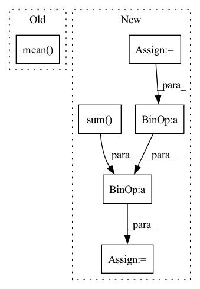

Pattern ID :27318
Before Change
image_z = self.clip_model.encode_image(pred_rgb)
image_z = image_z / image_z.norm(dim=-1, keepdim=True) // normalize features
loss = - (image_z * text_z).sum(-1).mean()
return loss
After Change
image_z = self.clip_model.encode_image(self.aug(pred_rgb))
image_z = image_z / image_z.norm(dim=-1, keepdim=True) // normalize features
loss = 0
if "image" in clip_z:
loss = loss - (image_z * clip_z["image"]).sum(-1).mean()
if "text" in clip_z:
loss = loss - (image_z * clip_z["text"]).sum( -1) .mean()
loss = loss * grad_scale
return loss
In pattern: SUPERPATTERN
Frequency: 5
Non-data size: 6
Instances Fragment ID: 81122390
Project Name: ashawkey/stable-dreamfusion
Commit Name: 95f72bb3eff0347e529989e9cef6091fe87a2f80
Time: 2023-05-07
Author: ashawkey1999@gmail.com
File Name: guidance/clip_utils.py
M Class Name: CLIP
N Class Name: CLIP
M Method Name: train_step(4)
N Method Name: train_step(3)
M Parent Class: nn.Module
N Parent Class: nn.Module
M File Name: guidance/clip_utils.py
N File Name: guidance/clip_utils.py
M Start Line: 39
M End Line: 44
N Start Line: 37
N End Line: 49
Before Change
x = torch.cat((x, static_x), dim=1)
// take the mean of all time steps (rows) with additional row for static features; output size = (batch_size, 64)
x = torch.mean( x, 1)
// pass through fully-connected part to lower dimension to 2 (binary classification)
return self.feed_forward(x)
After Change
// take the masked mean of all time steps (rows) with additional row for static features; output size = (batch_size, 64)
mask = torch.cat((mask, torch.ones((x.size()[0], 1), dtype=torch.bool)), dim=1).unsqueeze(2).long()
time_length = torch.FloatTensor(time_length).unsqueeze(1)
x = torch.sum( x * (1 - mask), dim=1) / (time_length + 1) // masked aggregation
// pass through fully-connected part to lower dimension to 2 (binary classification)
return self.feed_forward(x) Fragment ID: 81122311
Project Name: mims-harvard/raindrop
Commit Name: c78a0c22f831e2f0ee3f125343ad6e4a2894d680
Time: 2021-08-19
Author: mz4730@student.uni-lj.si
File Name: code/baselines/Transformer_baseline.py
M Class Name: Transformer_P12
N Class Name: Transformer_P12
M Method Name: forward(4)
N Method Name: forward(4)
M Parent Class: nn.Module
N Parent Class: nn.Module
M File Name: code/baselines/Transformer_baseline.py
N File Name: code/baselines/Transformer_baseline.py
M Start Line: 147
M End Line: 163
N Start Line: 146
N End Line: 167
Before Change
- torch.sum(self.log_scale + 0.5 * torch.pow((z - self.loc) / torch.exp(self.log_scale), 2), 1)
acc = self.a(z)
if self.Z == None:
self.Z = torch.mean( acc) .detach()
alpha = (1 - self.Z) ** (self.T - 1)
log_p = torch.log((1 - alpha) * acc[:, 0] / self.Z + alpha) + log_p_gauss
return z, log_pAfter Change
t = 0
z = torch.zeros(num_samples, self.d, dtype=self.loc.dtype, device=self.loc.device)
s = 0
n = 0
Z_batch = 0
for i in range(self.T):
eps = torch.randn((num_samples, self.d), dtype=self.loc.dtype, device=self.loc.device)
z_ = self.loc + torch.exp(self.log_scale) * eps
acc = self.a(z_)
if self.training or self.Z == None:
Z_batch = Z_batch + torch.sum( acc)
n = n + num_samples
dec = torch.rand_like(acc) < acc
for i, dec_ in enumerate(dec):
if dec_ or t == self.T:
z[s] = z_[i]
s = s + 1
t = 0
else:
t = t + 1
if s == num_samples:
break
if s == num_samples:
break
log_p_gauss = - 0.5 * self.d * np.log(2 * np.pi) \
- torch.sum(self.log_scale + 0.5 * torch.pow((z - self.loc) / torch.exp(self.log_scale), 2), 1)
acc = self.a(z)
if self.training or self.Z == None:
Z_batch = Z_batch / n
if self.Z == None:
self.Z = Z_batch
else:
self.Z = ((1 - self.eps) * self.Z + self.eps * Z_batch).detach()
self.Z = Z_batch - Z_batch.detach() + self.Z
alpha = (1 - self.Z) ** (self.T - 1)
log_p = torch.log((1 - alpha) * acc[:, 0] / self.Z + alpha) + log_p_gauss
return z, log_p Fragment ID: 81122322
Project Name: vincentstimper/normalizing-flows
Commit Name: 9aff267fc03712f6c0b102df9c74b34fa1301015
Time: 2020-08-13
Author: vincent.stimper@gmail.com
File Name: normflow/distributions.py
M Class Name: ResampledGaussian
N Class Name: ResampledGaussian
M Method Name: forward(2)
N Method Name: forward(2)
M Parent Class: BaseDistribution
N Parent Class: BaseDistribution
M File Name: normflow/distributions.py
N File Name: normflow/distributions.py
M Start Line: 109
M End Line: 112
N Start Line: 91
N End Line: 122
Before Change
return predictions
def masked_mse_loss(self, input, target, mask, background_mask):
return (background_mask * (mask * (input - target) ** 2)).mean()
def general_step(self, batch, batch_idx, mode):
A function to share code between all different steps.After Change
def masked_mse_loss(self, input, target, mask, background_mask):
//return (background_mask * (input - target) ** 2).mean()
input = torch.randn(2, 100, 3)
target = torch.randn(2, 100, 3)
mask = (input > 0).float()
background_mask = torch.randn(2, 100, 1)
value = background_mask * (input - target) ** 2
mask_sum = torch.sum( mask, dim=1)
mask_sum_modified = torch.clamp(mask_sum, min=1.0)
loss = torch.sum(value * mask) / mask_sum_modified
return loss
// TODO -> do not take into account -1 flow information (or filter them in WaymoDataset?) Fragment ID: 81122269
Project Name: jabb0/fastflow3d
Commit Name: bea207737f9d35e204c73ecfcde3de582a10956d
Time: 2021-06-28
Author: carlosmn1997@gmail.com
File Name: models/FastFlow3DModelScatter.py
M Class Name: FastFlow3DModelScatter
N Class Name: FastFlow3DModelScatter
M Method Name: masked_mse_loss(5)
N Method Name: masked_mse_loss(5)
M Parent Class: pl.LightningModule
N Parent Class: pl.LightningModule
M File Name: models/FastFlow3DModelScatter.py
N File Name: models/FastFlow3DModelScatter.py
M Start Line: 118
M End Line: 118
N Start Line: 120
N End Line: 128
Before Change
logits, _ = model(data["input"], past=None)
loss = self.criterion(logits.transpose(1, 2), data["output"]).mean(-1)
return {"loss": loss.mean() , "perplexity": loss.exp().mean()}
def evaluate_gpt2_model(args: argparse.Namespace):After Change
loss = self.criterion(logits.transpose(1, 2), data["output"])
mask = (data["output"] != self.vocab.pad_idx).float()
loss = (loss * mask).sum() / mask.sum()
perplexity = (loss.exp() * mask).sum() / mask.sum()
return {"loss": loss, "perplexity": perplexity}
Fragment ID: 81122361
Project Name: affjljoo3581/gpt2
Commit Name: ca25b19eb1f6d46d8855231c367172ff62e427b0
Time: 2020-08-01
Author: affjljoo3581@gmail.com
File Name: src/gpt2/evaluate_model.py
M Class Name: GPT2EvaluationSpec
N Class Name: GPT2EvaluationSpec
M Method Name: eval_objective(3)
N Method Name: eval_objective(3)
M Parent Class: EvaluationSpec
N Parent Class: EvaluationSpec
M File Name: src/gpt2/evaluate_model.py
N File Name: src/gpt2/evaluate_model.py
M Start Line: 41
M End Line: 43
N Start Line: 40
N End Line: 46